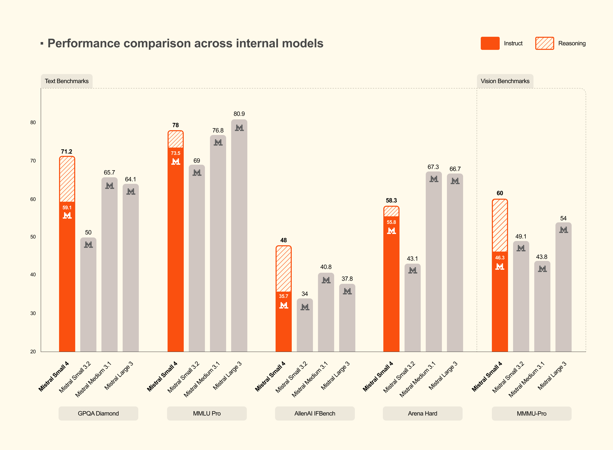
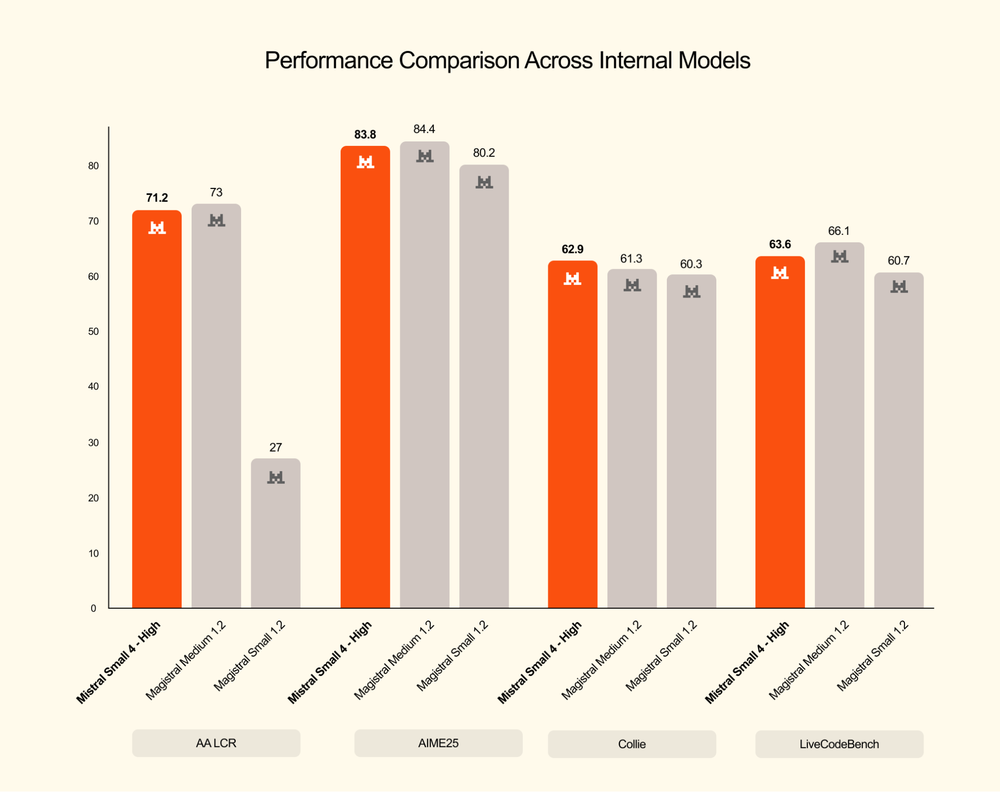
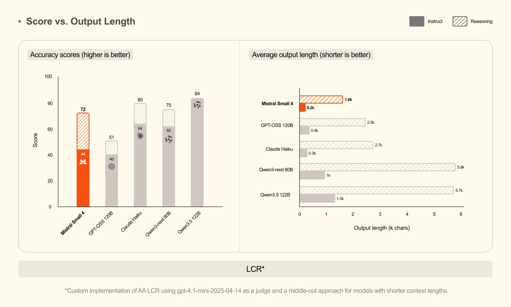
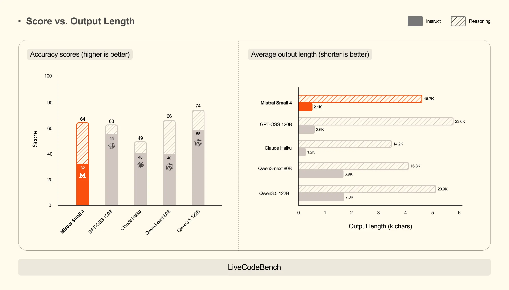
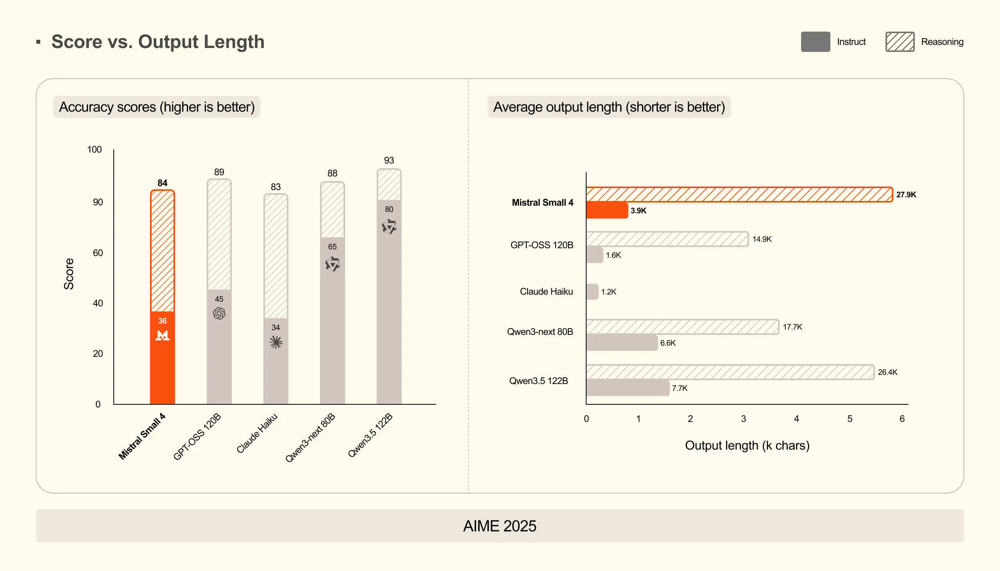

Mistral Small 4 119B A6B
Mistral Small 4 是一个强大的混合模型，既可用作通用指令模型，也可用作推理模型。它将三个不同模型系列——Instruct、Reasoning（此前称为 Magistral）和 Devstral——的能力整合到一个统一模型中。
凭借多模态能力、高效架构和灵活的模式切换，它成为可用于各类任务的强大通用模型。在针对延迟优化的配置下，Mistral Small 4 的端到端完成时间缩短 40%；在针对吞吐量优化的配置下，与 Mistral Small 3 相比，它每秒可处理的请求数量达到 3 倍。
要进一步提高效率，可以利用以下任一种方式：
- 借助我们训练的 eagle head 进行 speculative decoding：
mistralai/Mistral-Small-4-119B-2603-eagle。 - 借助我们的 NVFP4 checkpoint 进行 4 位浮点精度量化：
mistralai/Mistral-Small-4-119B-2603-NVFP4。
主要特性
Mistral Small 4 采用以下架构设计：
- MoE：128 个专家，其中 4 个处于激活状态。
- 119B 参数，每个 token 激活 6.5B 参数。
- 256k 上下文长度。
- 多模态输入：接受文本和图像输入，输出文本。
- 指令与推理功能，支持函数调用（可针对每次请求配置推理强度）。
Mistral Small 4 提供以下能力：
- 推理模式：在快速即时回复模式与推理模式之间切换，在需要时通过测试时计算提升性能。
- 视觉：除文本外，还能分析图像，并根据视觉内容提供见解。
- 多语言：支持数十种语言，包括英语、法语、西班牙语、德语、意大利语、葡萄牙语、荷兰语、中文、日语、韩语和阿拉伯语。
- 系统提示词：能够严格遵循并支持系统提示词。
- agent 能力：同类领先的 agent 能力，原生支持函数调用和 JSON 输出。
- 速度优化：提供同类领先的性能与速度。
- Apache 2.0 许可：允许商业和非商业用途的开源许可。
- 大上下文窗口：支持 256k 上下文窗口。
推荐设置
- 推理强度：
'none'→ 不使用推理'high'→ 使用推理（推荐用于复杂提示词）
对复杂任务使用reasoning_effort="high"
- 温度：
reasoning_effort="high"时使用 0.7；reasoning_effort="none"时，根据任务在 0.0 到 0.7 之间设置温度。
使用场景
Mistral Small 4 面向通用聊天助手、编程、agent 任务和推理任务（开启推理模式）。其多模态能力还支持理解文档与图像，以进行数据提取和分析。
它的能力尤其适合：
- 对用于软件工程自动化与代码库探索的编程及 agent 能力感兴趣的开发者。
- 寻求通用聊天助手、agent 和文档理解能力的企业。
- 利用其数学与研究能力的研究人员。
Mistral Small 4 也非常适合通过定制和微调来处理更专业的任务。
示例
- 通用聊天助手
- 文档解析与提取
- 编程 agent
- 研究助手
- 定制与微调
- 以及更多场景……
基准
与内部模型比较
通过支持逐请求设置的 reasoning_effort 参数，可以根据任务触发推理。将其设置为：
reasoning_effort="none"：为日常任务提供快速、轻量的回复，聊天风格与mistralai/Mistral-Small-3.2-24B-Instruct-2506相同。reasoning_effort="high"：针对复杂问题进行深入、逐步的推理，详细程度与此前的 Magistral 模型相当，例如mistralai/Magistral-Small-2509。

推理模型比较

与其他模型比较
启用推理的 Mistral Small 4 取得了有竞争力的分数，在全部三个基准上达到或超过 GPT-OSS 120B，同时生成明显
更短的输出。在 AA LCR 上，Mistral Small 4 仅用 1.6K 字符就得到 0.72 分，而 Qwen 模型需要 3.5–4 倍的输出量（5.8–6.1K）
才能获得相近的性能。在 LiveCodeBench 上，Mistral Small 4 超过 GPT-OSS 120B，同时输出量减少 20%。
这种效率降低了延迟和推理成本，并改善了用户体验。



使用方法
多个库已支持 Mistral Small 4 的推理与微调。我们在此感谢帮助实现这些支持的每一位贡献者和维护者。
推理
模型可以通过以下方式部署：
如果本地部署的服务表现不佳，为获得最佳性能，我们推荐使用 Mistral AI API。
微调
可通过以下方式微调模型：
vLLM（推荐）
我们推荐使用 vLLM 库运行 Mistral Small 4，以实现可用于生产环境的推理。
安装
安装最新版 vllm：
uv pip install -U vllm
这样应该会自动安装 mistral_common >= 1.11.0。
检查方法：
python -c "import mistral_common; print(mistral_common.__version__)"
也可以使用现成的 docker 镜像，或使用 docker hub上的镜像。
启动模型服务
我们推荐采用服务器／客户端配置：
vllm serve mistralai/Mistral-Small-4-119B-2603 --max-model-len 262144 --tensor-parallel-size 2 --attention-backend FLASH_ATTN_MLA \
--tool-call-parser mistral --enable-auto-tool-choice --reasoning-parser mistral --max_num_batched_tokens 16384 --max_num_seqs 128 \
--gpu_memory_utilization 0.8请求服务器
指令遵循
Mistral Small 4 能够严格遵循你的指令。
from datetime import datetime, timedelta
from openai import OpenAI
from huggingface_hub import hf_hub_download
# Modify OpenAI's API key and API base to use vLLM's API server.
openai_api_key = "EMPTY"
openai_api_base = "http://localhost:8000/v1"
TEMP = 0.1
# use TEMP = 0.7 for reasoning="high"
client = OpenAI(
api_key=openai_api_key,
base_url=openai_api_base,
)
models = client.models.list()
model = models.data[0].id
def load_system_prompt(repo_id: str, filename: str) -> str:
file_path = hf_hub_download(repo_id=repo_id, filename=filename)
with open(file_path, "r") as file:
system_prompt = file.read()
today = datetime.today().strftime("%Y-%m-%d")
yesterday = (datetime.today() - timedelta(days=1)).strftime("%Y-%m-%d")
model_name = repo_id.split("/")[-1]
return system_prompt.format(name=model_name, today=today, yesterday=yesterday)
SYSTEM_PROMPT = load_system_prompt(model, "SYSTEM_PROMPT.txt")
messages = [
{"role": "system", "content": SYSTEM_PROMPT},
{
"role": "user",
"content": "Write me a sentence where every word starts with the next letter in the alphabet - start with 'a' and end with 'z'.",
},
]
response = client.chat.completions.create(
model=model,
messages=messages,
temperature=TEMP,
reasoning_effort="none",
)
assistant_message = response.choices[0].message.content
print(assistant_message)工具调用
借助这个简单的 Python 计算器工具，我们来求解一些方程。
import json
from datetime import datetime, timedelta
from openai import OpenAI
from huggingface_hub import hf_hub_download
# Modify OpenAI's API key and API base to use vLLM's API server.
openai_api_key = "EMPTY"
openai_api_base = "http://localhost:8000/v1"
TEMP = 0.1
client = OpenAI(
api_key=openai_api_key,
base_url=openai_api_base,
)
models = client.models.list()
model = models.data[0].id
def load_system_prompt(repo_id: str, filename: str) -> str:
file_path = hf_hub_download(repo_id=repo_id, filename=filename)
with open(file_path, "r") as file:
system_prompt = file.read()
today = datetime.today().strftime("%Y-%m-%d")
yesterday = (datetime.today() - timedelta(days=1)).strftime("%Y-%m-%d")
model_name = repo_id.split("/")[-1]
return system_prompt.format(name=model_name, today=today, yesterday=yesterday)
SYSTEM_PROMPT = load_system_prompt(model, "SYSTEM_PROMPT.txt")
image_url = "https://math-coaching.com/img/fiche/46/expressions-mathematiques.jpg"
def my_calculator(expression: str) -> str:
return str(eval(expression))
tools = [
{
"type": "function",
"function": {
"name": "my_calculator",
"description": "A calculator that can evaluate a mathematical expression.",
"parameters": {
"type": "object",
"properties": {
"expression": {
"type": "string",
"description": "The mathematical expression to evaluate.",
},
},
"required": ["expression"],
},
},
},
{
"type": "function",
"function": {
"name": "rewrite",
"description": "Rewrite a given text for improved clarity",
"parameters": {
"type": "object",
"properties": {
"text": {
"type": "string",
"description": "The input text to rewrite",
}
},
},
},
},
]
messages = [
{"role": "system", "content": SYSTEM_PROMPT},
{
"role": "user",
"content": [
{
"type": "text",
"text": "Thanks to your calculator, compute the results for the equations that involve numbers displayed in the image.",
},
{
"type": "image_url",
"image_url": {
"url": image_url,
},
},
],
},
]
response = client.chat.completions.create(
model=model,
messages=messages,
temperature=TEMP,
tools=tools,
tool_choice="auto",
reasoning_effort="none",
)
tool_calls = response.choices[0].message.tool_calls
results = []
for tool_call in tool_calls:
function_name = tool_call.function.name
function_args = tool_call.function.arguments
if function_name == "my_calculator":
result = my_calculator(**json.loads(function_args))
results.append(result)
messages.append({"role": "assistant", "tool_calls": tool_calls})
for tool_call, result in zip(tool_calls, results):
messages.append(
{
"role": "tool",
"tool_call_id": tool_call.id,
"name": tool_call.function.name,
"content": result,
}
)
response = client.chat.completions.create(
model=model,
messages=messages,
temperature=TEMP,
reasoning_effort="none",
)
print(response.choices[0].message.content)视觉推理
看看 Mistral Small 4 是否知道什么时候该发起战斗！
from datetime import datetime, timedelta
from openai import OpenAI
from huggingface_hub import hf_hub_download
# Modify OpenAI's API key and API base to use vLLM's API server.
openai_api_key = "EMPTY"
openai_api_base = "http://localhost:8000/v1"
TEMP = 0.7
client = OpenAI(
api_key=openai_api_key,
base_url=openai_api_base,
)
models = client.models.list()
model = models.data[0].id
def load_system_prompt(repo_id: str, filename: str) -> str:
file_path = hf_hub_download(repo_id=repo_id, filename=filename)
with open(file_path, "r") as file:
system_prompt = file.read()
today = datetime.today().strftime("%Y-%m-%d")
yesterday = (datetime.today() - timedelta(days=1)).strftime("%Y-%m-%d")
model_name = repo_id.split("/")[-1]
return system_prompt.format(name=model_name, today=today, yesterday=yesterday)
SYSTEM_PROMPT = load_system_prompt(model, "SYSTEM_PROMPT.txt")
image_url = "https://static.wikia.nocookie.net/essentialsdocs/images/7/70/Battle.png/revision/latest?cb=20220523172438"
messages = [
{"role": "system", "content": SYSTEM_PROMPT},
{
"role": "user",
"content": [
{
"type": "text",
"text": "What action do you think I should take in this situation? List all the possible actions and explain why you think they are good or bad.",
},
{"type": "image_url", "image_url": {"url": image_url}},
],
},
]
response = client.chat.completions.create(
model=model,
messages=messages,
temperature=TEMP,
reasoning_effort="high",
)
print(response.choices[0].message.content)Transformers
安装
要使用 Mistral Small 4，需要安装 Transformers 的 main 分支：
uv pip install git+https://github.com/huggingface/transformers.git推理
Python 推理代码片段
import torch
from transformers import AutoProcessor, Mistral3ForConditionalGeneration
model_id = "mistralai/Mistral-Small-4-119B-2603"
processor = AutoProcessor.from_pretrained(model_id)
model = Mistral3ForConditionalGeneration.from_pretrained(
model_id, device_map="auto"
)
image_url = "https://static.wikia.nocookie.net/essentialsdocs/images/7/70/Battle.png/revision/latest?cb=20220523172438"
messages = [
{
"role": "user",
"content": [
{
"type": "text",
"text": "What action do you think I should take in this situation? List all the possible actions and explain why you think they are good or bad.",
},
{"type": "image_url", "image_url": {"url": image_url}},
],
},
]
inputs = processor.apply_chat_template(messages, return_tensors="pt", tokenize=True, return_dict=True, reasoning_effort="high")
inputs = inputs.to(model.device)
output = model.generate(
**inputs,
max_new_tokens=1024,
do_sample=True,
temperature=0.7,
)[0]
# Setting `skip_special_tokens=False` to visualize reasoning trace between [THINK] [/THINK] tags.
decoded_output = processor.decode(output[len(inputs["input_ids"][0]):], skip_special_tokens=False)
print(decoded_output)许可
本模型采用 Apache 2.0 许可。
不得以侵犯、盗用或违反任何第三方权利（包括知识产权）的方式使用本模型。